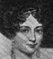
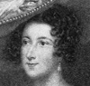
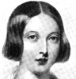

Alison Booth
Jerrold, Clare Armstrong Bridgman. The Early Court of Queen Victoria. London: Nash; New York: Putnam's, 1912.
Corresponds with Blessington, Finden, Burke, and Jameson. "Gallery" is a literal and figurative premise for at least twenty collections in this bibliography. Clare Jerrold also wrote three individual biographies of Victoria. Queen Victoria is a Featured Subject, and all chapters in this collection refer to her biography.
TOC: Princess Victoria's Relatives; Princess Victoria's Mother and Uncle; Princess Victoria's Tuition in Politics; Princess Victoria's Suitors; Queen Victoria's Accession; Queen Victoria's Advisers; Queen Victoria's Circle; Queen Victoria's Prime Minister; Queen Victoria's Ladies and Lovers; Queen Victoria's Disloyal Subjects; Queen Victoria's Tragic Mistake; Queen Victoria's Love; Queen Victoria's Early Married Life; Queen Victoria's Tory Ministry; Queen Victoria's Home.
-
Queen Victoria
-
 Queen Adelaide
Queen Adelaide -
H. R. H. The Duchess of Kent
-
 The Hon. Mrs. Norton
The Hon. Mrs. Norton -
 Harriet
Harriet -
Lady Tavistock
-
Lady Flora Hastings
-
 Lady Portman
Lady Portman -
Queen Victoria
Search OCLC WorldCat for this title.
Search Google Books for this title.